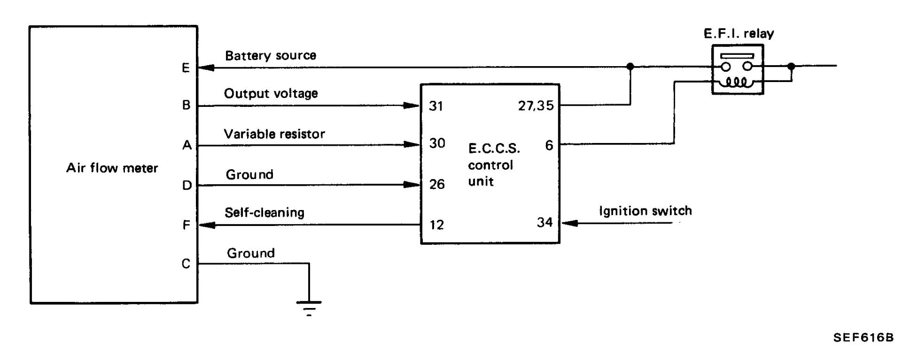
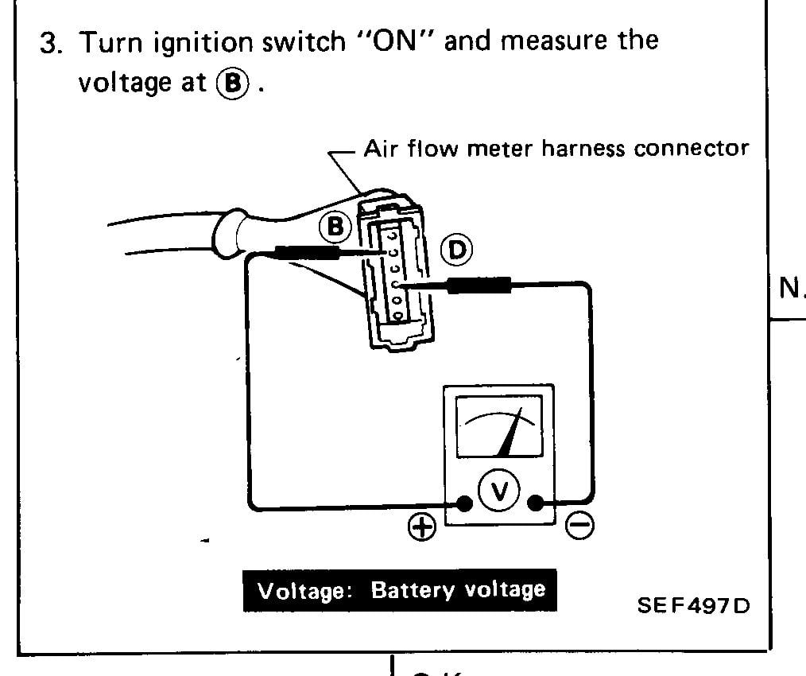
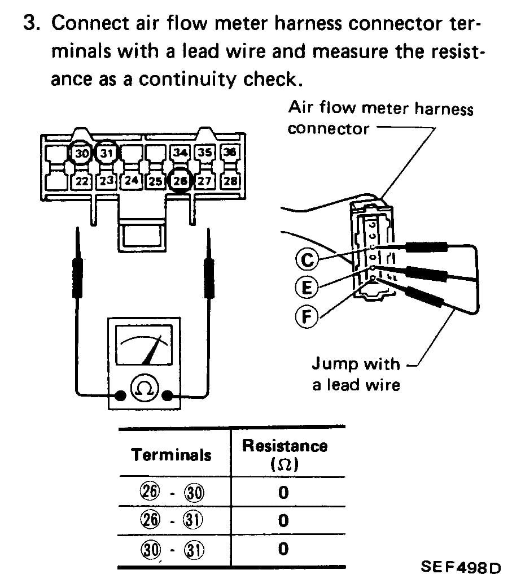
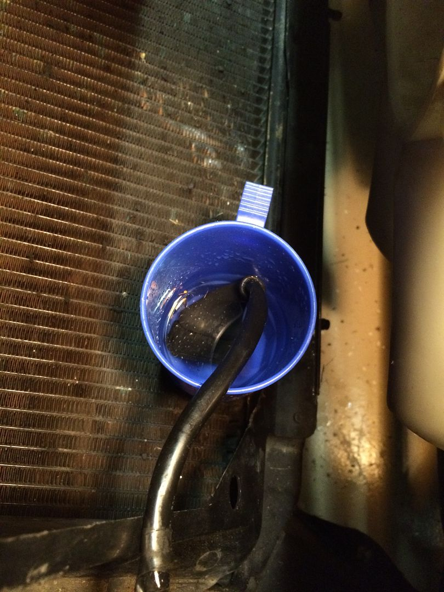
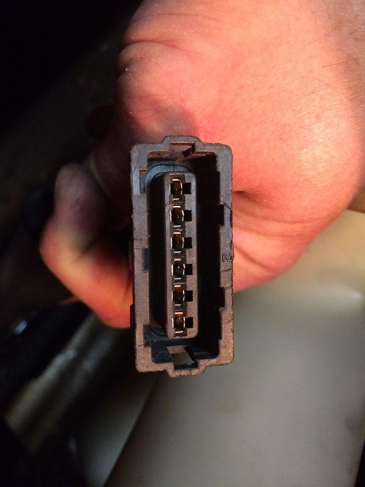
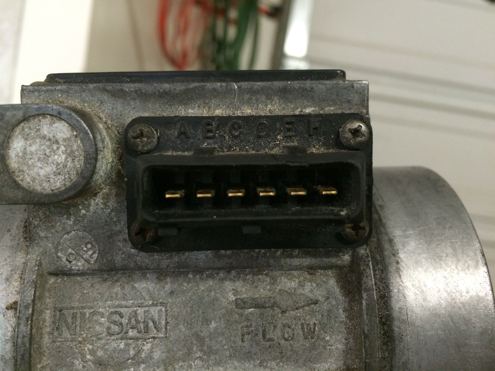
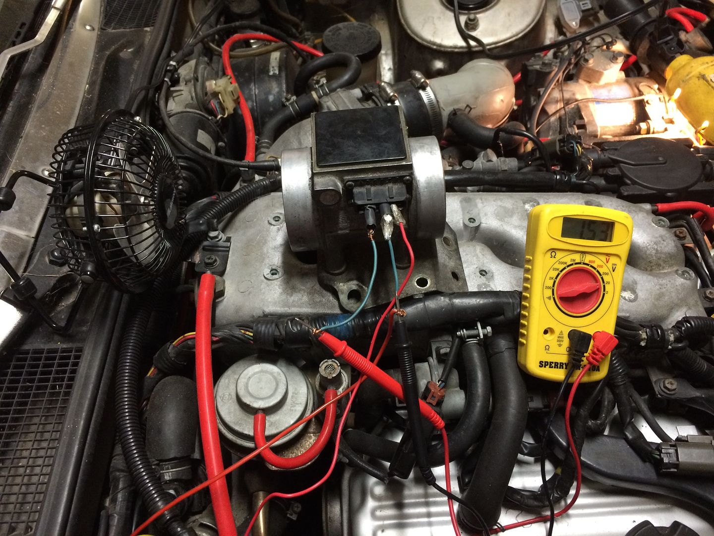
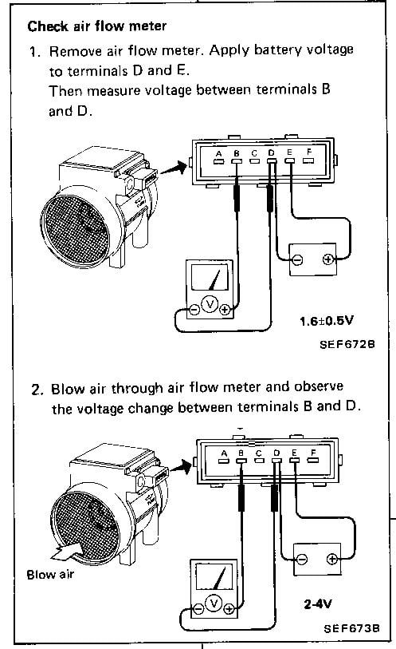
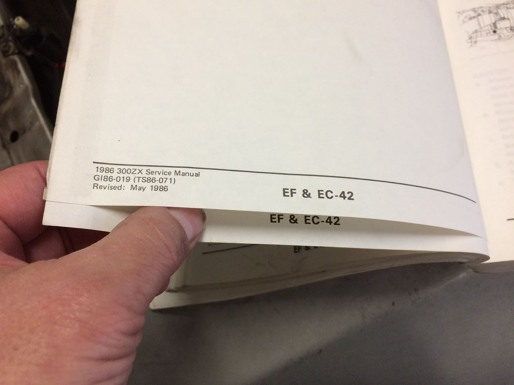
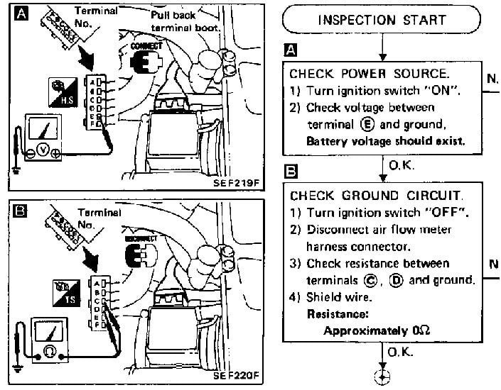

-
Hoping someone here can verify my understanding of '86 FSM wiring diagrams for the air flow meter. Having a hard time believing that Nissan got these so wrong, so hoping somebody can explain what I'm missing or share a different FSM that these have been corrected. The hard copy I own has some errata pages that were glued over the original pages in some places, so I'm hoping maybe these just didn't get corrected on my copy. The one I downloaded from Zenon's website is identical to what's in my book…
For reference, here is the first diagram, on pg. EF&EC-14. It shows the ECU pin numbers for all wires on the AFM harness except C, which goes to the body ground. In the wiring diagram, I traced it to pins 36 and 28. I think all of these are correct because I traced them on the main wiring diagram (EF&EC-8,9) before I found this page:

This is the second diagram, on pg. EF&EC-53. Based on the one above, if the harness is disconnected from the AFM, I don't see how testing voltage between B and D will give a reading. My testing confirms this, and at some time in the past I scribbled through the B and showed the test lead to E. My testing on the car confirms that with the ignition on, there is battery voltage between D and E:

This is the third diagram, on pg. EF&EC-54. Based on the first diagram, I don't see how jumpering between C, E and F will result in continuity on 26-30, 26-31 or 30-31… seems like it should be jumpered between A, B and D for those pins. I haven't had a chance to test this yet, because it's late and I just finished looking at these diagrams:

Here are the jumper pairs and pin numbers I think I need to test:
A-B = 30-31
B-C = 28-31 and 31-36
C-D = 26-28 and 26-36
D-E = 26-35
E-F = 35-12 (12 being on the 20-pin connector)
Any help would be much appreciated…'86 NA - original owner (1986-93) and final owner (2005-present)
My build thread: http://z31performance.com/showthread…-Got-mine-back
-
Update
I confirmed my suspicion that the diagnostic procedures are incorrect in the second and third illustrations. I did the continuity checks as described above and everything checked out perfectly.
While I had everything apart, I cleaned the connector and also tested the AFM per the FSM. It checked out good.
Connector soaking in vinegar… after this, I neutralized with baking soda.....

Here is the result:

Here is the AFM side of the connection:

Volt meter test No air flow:

Video of the meter test with flow:
http://vid181.photobucket.com/albums…F62B7E9506.mp4
I reassembled and started the car. It ran like it should (instead of surging). I was quite pleased, and took it for a drive around the block. About half way, it started surging again. I limped home (I guess that's why they call it limp mode?) and with it idling, was able to wiggle the AFM wiring connector and get the engine to almost stall. This tells me I have a bad connector or damaged wire, so I'm going to try to de-pin it, solder on some longer wire and repin it. There's really almost no slack in that part of the harness, so a little extra wire will be helpful. The alternative would be to source a new one, but that would still require splicing into the existing harness.
I will say that it is a PITA getting the AFM in and out, with all the bolts and brackets that Nissan used. Just curious if anyone else has left bolts out when re-installing it. I omitted the one that is directly underneath the outlet tube, and I didn't reconnect the A/C bracket to one of the other two bolts.'86 NA - original owner (1986-93) and final owner (2005-present)
My build thread: http://z31performance.com/showthread…-Got-mine-back
-
Do the test as it says. It's forming a circuit. You're testing continuity and resistance.
there are other sections that describe testing the AFM if you also suspect a faulty sensor. -
do it by the book homieOriginally posted by wbnethery3 View Post -
Homie? Is this the '80's again?
If you have a different FSM than the one I posted, please consult it to see if the labels are the same… I'm satisfied that this is an error in the one I have, just wanted to see someone else's version without downloading all of them from Zenon.'86 NA - original owner (1986-93) and final owner (2005-present)
My build thread: http://z31performance.com/showthread…-Got-mine-back
-
reference the later versions if you like, AFM pinout doesn't change. I'm not doing work for ya just trying to help, i tried to make the *text text text* bold but i suck at formatting
Do it by the book - you did it wrong 1 time, now do it again the right way
lel it's your 420'th post -
Let me clarify since you don't seem to get what I'm saying - I did it by the book, per the wiring diagram. If you compare the top diagram in my original post (pinout of the AFM) to the wiring schematic (which I didn't copy/paste into the post), they agree with each other. That is what I used to determine that the two steps of the test procedures are labeled wrong.
1st error
They have the test lead location wrong for battery voltage to the AFM. If you compare the pinout to the first test procedure, you'll see that the B location is expecting output voltage from the AFM, based on its variable resistance, not battery voltage. That is on pin E.
2nd error
They identify three pins that should be jumpered in order to test continuity at the 16-pin connector. Instead of pins C, E and F (which doesn't even go to the 16-pin connector), it should show jumpers between pins A, B and D.
I'm not saying the entire FSM is wrong, just these two steps in one particular diagnostic procedure. I used the AFM test procedure (as shown in the second post) and it works (the procedure and the actual results agree).
All you've done is state your faith in the book, and I'm asking you to specifically explain what I'm missing or (better) show me a different version of the test procedure to confirm they corrected these two steps.'86 NA - original owner (1986-93) and final owner (2005-present)
My build thread: http://z31performance.com/showthread…-Got-mine-back
-
Did you perform the test as described? did you get battery voltage? did you continue to diagnose by your results following the flow chart?Originally posted by wbnethery3 View Post
Originally posted by wbnethery3 View Post
By testing 26, 30, and 31 while jumping C,E,F you're testing the meters internals for faults. Typical faults will increase circuit resistance or create open circuits (OL).
If you've correctly and completely followed the steps move on to unit replacement or other suggested diagnostics.Originally posted by wbnethery3 View Post -
Last try
I appreciate your persistence, but I've already satisfied myself that the harness is good and the AFM is good. As stated, I am now moving on to fixing a loose pin in the connector once we're past the holiday craziness.
For the sake of trying to close out this thread, I'm going to add one more bit of explanation. All I can figure is you think these tests are done with the connector hooked up to the AFM… which it's not.
To answer your first question, yes I connected my multitester to B and D first, and got no voltage reading with the key on. That's because the B lead on the connector is an output from the meter back to the ECCS, so it shouldn't have any voltage when disconnected from the meter (which is how this test is performed). Here's another diagram to help confirm. It shows the meter side of the connections, but it also clearly shows which terminal should have battery voltage - E. Terminal B will NEVER read battery voltage as the erroneous second diagram in my initial post would lead you to believe. This one is from EF&EC-55, and is the test which I referred to above that I used in the video.

As I said above, the connector isn't even hooked up to the air flow meter. This test is for checking continuity of the harness between the AFM and the ECCS, not for checking the meter for internal faults. So, if the jumpers are between wires that you don't even test on the ECCS end of the harness, how is it going to work?By testing 26, 30, and 31 while jumping C,E,F you're testing the meters internals for faults. Typical faults will increase circuit resistance or create open circuits (OL).
Again, I appreciate your attempt to help, but I think you're misunderstanding the test procedure itself and therefore cannot see the errors I've discovered. I was pretty sure they were probably corrected in a later version of the FSM, I just didn't want to have to download one. I did download the '87 FSM, and it's organized differently but pretty well lines up with what I'm saying.'86 NA - original owner (1986-93) and final owner (2005-present)
My build thread: http://z31performance.com/showthread…-Got-mine-back
-
'I found a issue that should be revised, but i don't want to reference revised editions'.
Get your head out of your ass. The wiring and values do not change. -
Facts
So far all of my posts have been questions or facts, while the only comments I've gotten have been one person citing their blind faith in the way the Nissan folks wrote (and translated) the FSM. There are several pages which have corrections with Revision dates of May 1986 printed on single 8x10-sized sheets glued over the original printed and bound pages of the FSM. I bought it off eBay when I got my car in 2005, so I have no idea how those came to be included in it. I have always assumed the book was, at one time, in the maintenance department of a dealer. So - for there to be a couple of diagrams that are mis-labeled is not inconceivable.
See picture below as an example of one of the errata pages. I've never torn one off to see what had changed, but I assume I could find it in the TSS listed above the revision date:

In order to keep with the fact-based approach here, and to keep to the high ground instead of slinging insults, I've downloaded the '84, '85, '87 and '88 FSM from Xenon's website.- The AFM test procedures are much more abbreviated in the '84 model year FSM (it being the first year, I can see why). All tests are done from the ECCS end of the harness, so no jumpers are installed and no tests are performed from the meter connector.
- The link to the '85 FSM on Xenon downloads a zip file which is labeled 1985 Nissan 300ZX, but it is actually the '86 FSM (per the TOC).
- The diagnostic procedures from the '87 and '88 FSM's appear identical (although on different pages), and have the diagram below. The wiring schematic is consistent with '86, which supports 88sinZ's comment that they don't change. This diagram clearly shows that battery voltage is between E and ground. They also test from C and D to ground for continuity, which means if you test between E and D (not B and D) you should get battery voltage. This appears on EF&EC-56 in the '87 manual and EF&EC-86 in the '88 manual:

So I'm done with this post… officially. If anyone else wishes to chime in with their actual test results on their car, or if they have a copy of an FSM they want to post up the picture of the pages that cover this diagnostic, then I'll reply. Not interested in having the last word, but I do want to keep the forum useful and have shared these things in hopes it will not devolve into name calling and opinions like the FB group.'86 NA - original owner (1986-93) and final owner (2005-present)
My build thread: http://z31performance.com/showthread…-Got-mine-back
-
step A: testing at EFI harness connector, with connector plugged into AFM
step B: testing at AFM terminal with harness connector disconnected
did you do this correctly? have you resolved the issue? -
I'll that as a NO
UNRESOLVED -
These diagnostics from the fsm call for back probing. Try doing that while following the fsm directions. Because with it plugged in and key on you will find voltage where you won't find it with then connector unplugged. Back probing is an awesome way to diag because you see what the computer see's.http://z31performance.com/showthread…2-2-(-now-NA2T
My build thread (:

Copyright © 2006–. All rights reserved. Privacy Policy